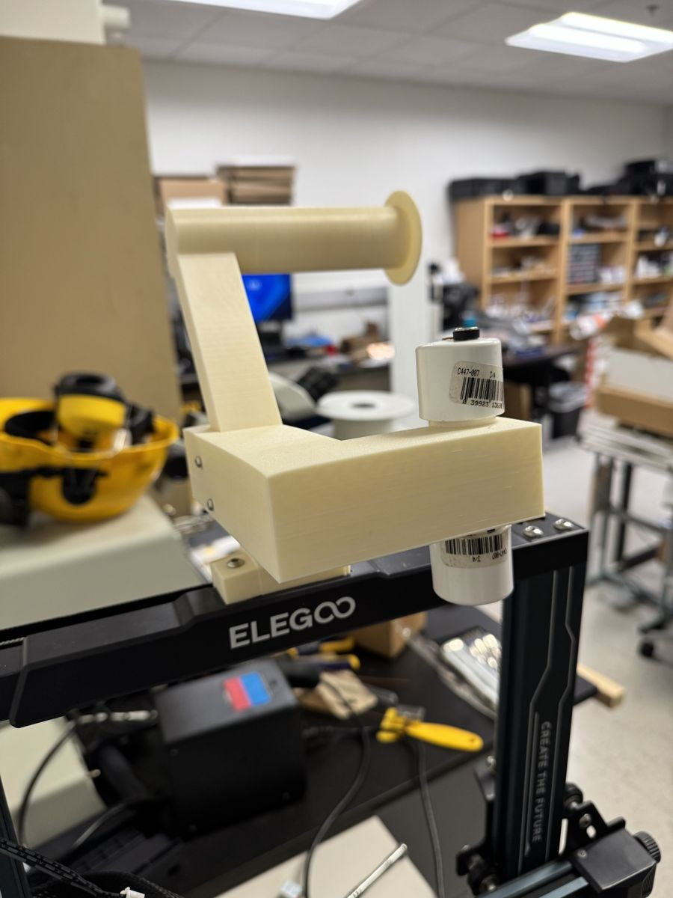
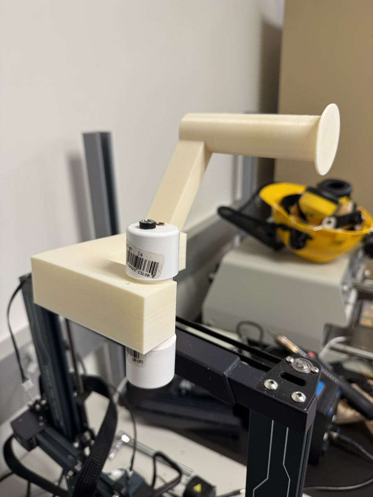
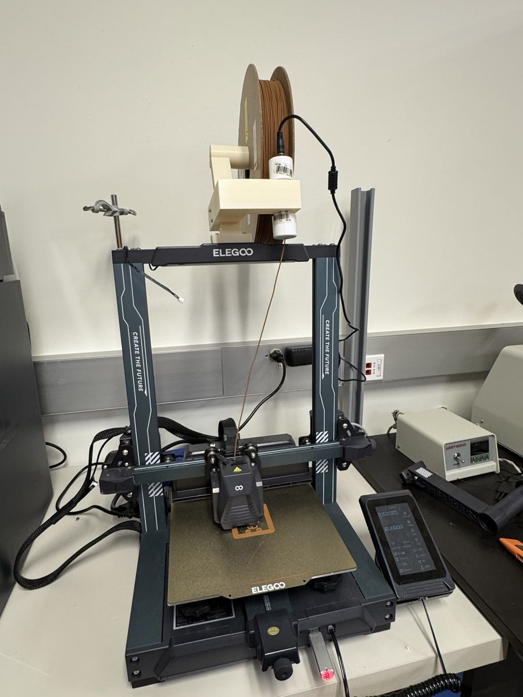
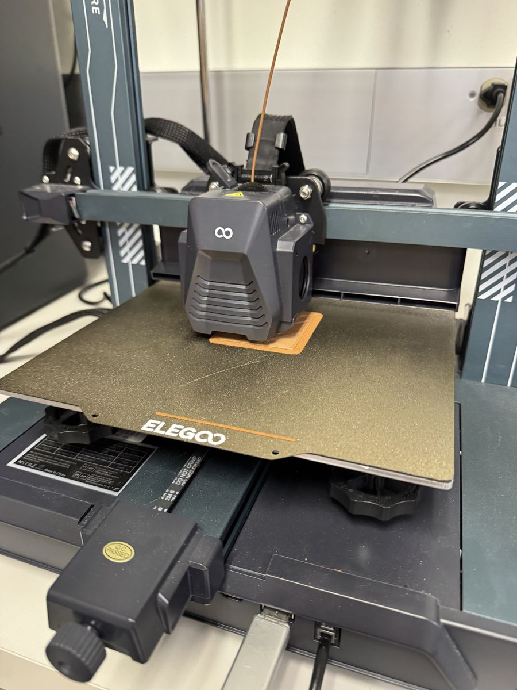
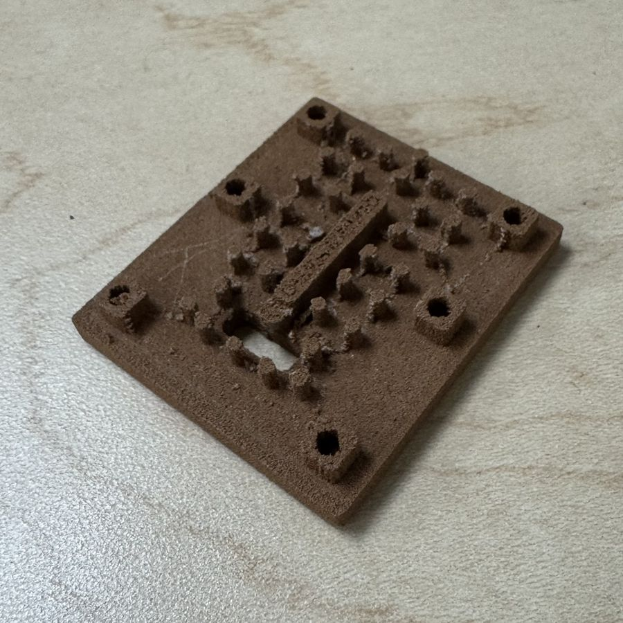
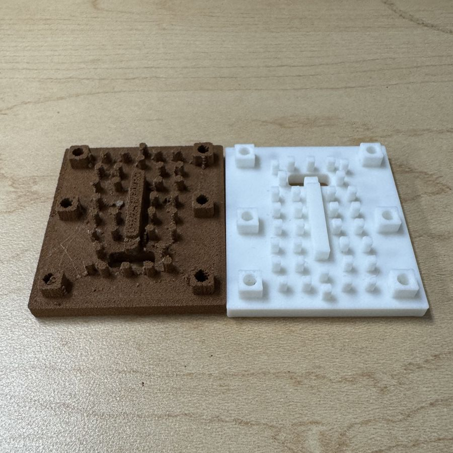
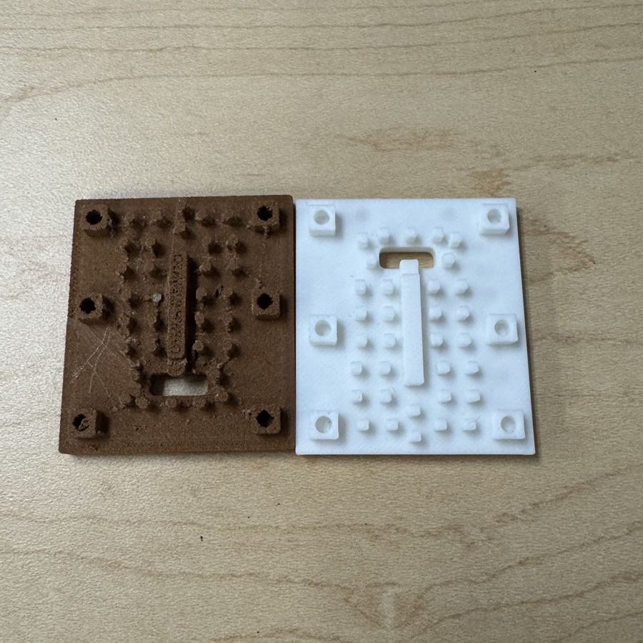

Printing With Copper
This project started with the research drone. While I was using the lab's 3D printer to print the drone's electronics housings, Mr. Nayan – another PhD student in the lab – asked if I knew how to use 3D printers. He's writing a paper on low-cost antenna manufacturing and wants to explore how well 3D-printed antennas actually work, so he asked me to help set up the lab's Elegoo Neptune 4 to print with copper filament from The Virtual Foundry.
That filament needs a specific setup, including the company's special filament prewarmer, and the spool was too big to fit on the printer's stock filament holder. So I designed a holder in SolidWorks that sits on top of the printer and holds both the spool and the prewarmer in place.


Fig. 1 · The holder I designed for the copper spool and filament prewarmer
Next, I set up the custom G-code profile recommended by The Virtual Foundry and got to printing.


Fig. 2 · The printer set up and printing with copper filament
The result was our first copper antenna. It hasn't been sintered yet, so right now it's a “green” part: copper powder held together by a plastic binder. Firing it in our kiln will burn off the binder and fuse the copper into a solid part.



Fig. 4 · The copper print next to the same antenna printed in normal PLA
After that first print, though, I started running into issue after issue. First the brittle filament kept snapping, and then the nozzle kept clogging. We've ordered a new extruder and nozzle combination, so hopefully once those come in, the Elegoo will be back in working order. Even if that doesn't work, though, the professor wants to try utilizing a better printer, so I'll have to make a setup for that one anyway.
We're also starting to look into electroplating. The idea is to print antennas out of conductive PLA, which is much, much easier to handle than the copper filament, and then electroplate them. I've been researching it with Mr. Nayan, and once our supplies come in, we'll get to electroplating with another PhD student he works with. Mr. Nayan will also have an antenna made by an actual metal 3D printing lab.
Once all three antennas are ready, we'll compare the copper-printed and electroplated antennas against professionally manufactured ones. For now, we're waiting on the conductive filament, the electroplating supplies, and the new printer hardware, so this page will grow as the project does.